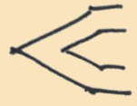

i am currently a physics phd student at the university of washington.
decoherence, predictability, and robustness depth thermography publication magic state distillation report quantum memory poster thesis presentation magic state distillation presentation